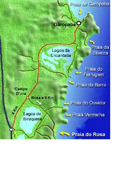
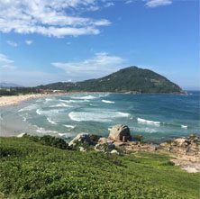
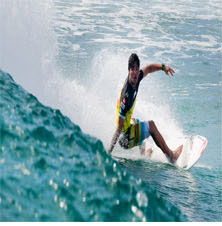
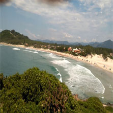
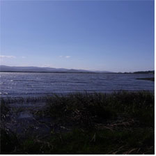
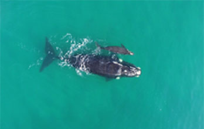

A praia da Ferrugem, que faz parte do conjunto de praias de Garopaba, está localizada entre a praia Barra e a praia da Silveira.  Mapa das Praias. A Praia da Ferrugem tem esse nome por causa das águas de cor ocre. Essas águas descem das encostas dos morros até a Lagoa Encantada e desembocam no canal da Barra. Águas com cor de ferrugem deram o nome à praia.  Vista de cima do morro. Muito frequentada por jovens e surfistas, possui águas claras e mar perfeito para as ondas, tanto do lado sul quanto do lado norte.  Medina em uma competição na Ferrugem! Se ao norte o mar é agitado formando picos perfeitos para quem gosta de pegar onda, ao sul as famílias com crianças aproveitam o encontro da lagoa com o mar, onde as águas são rasinhas e mornas.  Pôr do sol na Barrinha O sol se põe na lagoa, no lado oposto ao mar, formando um espetáculo imperdível. Após verão, a praia da Ferrugem, é o clima perfeito para quem busca paz e tranquilidade, cheia de natureza, trilhas e ligares encantadores para se descobrir.  A barrinha, parte mais calma da praia Entre julho e novembro, a praia da Ferrugem, também é rota das Baleias Francas, buscam águas calmas, quentes e protegidas para acasalamento, parto e cria dos filhotes nos primeiros meses de vida. As fêmeas podem atingir mais de 17 metros e 60 toneladas.  Baleias na sua rota pela Ferrugem